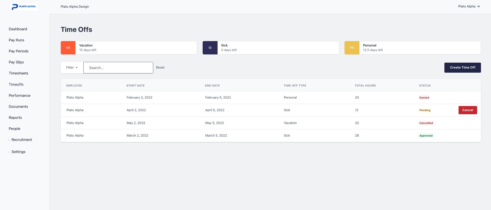
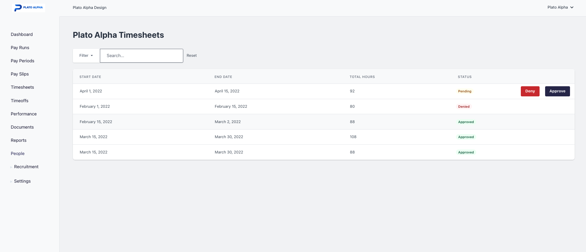

Time Management Software
Save on labor costs, eliminate excessive overtime and improve your overall efficiency.
Automate time and attendance
With our time and attendance feature, there’s no need to chase down managers for approvals and employees for their hours. Instead, automatic reminders help everyone update their schedules or approve timesheets on time, every time.

Easy and accurate
Using our TriblockHR's time tracking feature is simple and intuitive by design. When an employee makes a PTO request, their manager gets instant alerts via email. The system notifies the employee and updates their balance automatically, so work can continue with minimal interruption.

Tracking Employee Time
Frequently asked questions
-
All employees of an organization, this includes but not limited to managers, executives, line-staff. TriblockHR's Time Management loops employees directly into the process of owning their time with robust self-service features that takes the burden away from managers and executives to keep track of employee time.
-
Tracking Time and Attendance is critical for all organisations, no matter what size or what methods are used to determine employee pay. Having an automated Time and Attendance tracking system in place will help organisations across all industries save money and improve operations.
1. Dependable Accuracy. Advanced and automated time and attendance management software minimizes the risk of human errors. This is one of the biggest factors that contribute to financial losses.
2. Increased Productivity. When you have to track and verify time manually, that can delay when you’re able to send out direct deposits or paychecks. You can access your time and attendance information from anywhere. So if you want to check it as soon as the pay period ends, you can log on from your laptop or mobile device.
3. Increase employee satisfaction. Scheduling and handling time-off requests are an important part of maintaining a satisfied workforce. When employee-satisfaction increases, issues such as turnover may dramatically decrease. With automated software, it becomes possible to quickly review, approve, and address absence requests and manage planned absences to minimise their effect on your company.